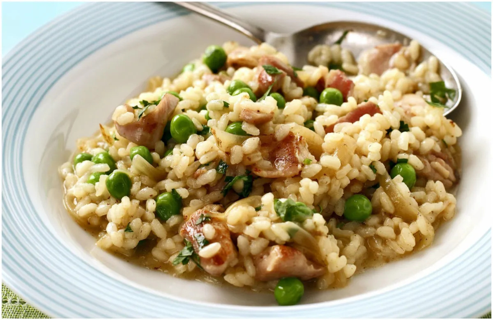

Risotto

Description
Italian recipe with multiple variations. This one contains chicken, others may include mushrooms or different ingredients.
Ingredients
- Risotto rice (0.6 kg)
- Chicken (1 kg)
- Red pepper (2)
- Garlic (2 cloves)
- Pesto (1 jar)
- Bacon (300 kg, sliced into cubes)
- Chicken stock (1 teaspoon)
- White whine (1 tablespoon)
- Olive oil
Steps
- Heat a large frying pan at a medium heat with oil. Slice the pepper and cut the chicken into pieces while it heats up.
- Cook the bacon for about 2 minutes, and remove it from the pan. At the same time, start heating a saucer to cook the rice, following whatever instructions are on the packet.
- Raise the heat slightly and put the chicken into the pan. Remove it when cooked slightly (it should look white but not yellow).
- Cook the pepper and garlic together in the pan. Boil some water in the kettle or in a saucer at the same time (about 1 litre).
- Add the chicken back into the pan along with the rice, and pour the jar of pesto in to the mixture, and stir.
- Fill the pan with the water, add the stockl, and stir.
- Keep refilling the pan with water when it evaporates, and on one instance, the white wine. Wait for the risotto to finish cooking. The rice should be soft.